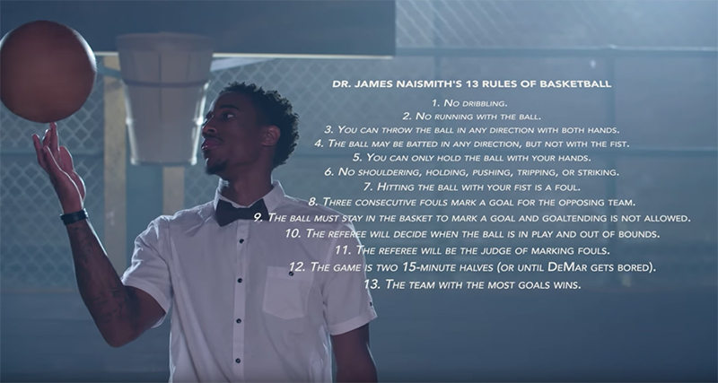

Basketball was invented by James Naismith, who was Canadian, in December 1892. Legend says it was invented when he threw a paper ball into a trash can. At the creation of basketball, a basket was worth one point. There was no backboard but it was added quickly because people would kick the ball to prevent scoring. There was only one basket which was peach crates. There were only 13 rules (see the image in English below or the link: http://basket-infos.com/2015/01/15/il-y-a-123-ans-james-naismith-definissait-officiellement-les-13-regles-originelles-du-basket/ and watch the video (in English) that applies these rules):

- The ball may be thrown in any direction with one or both hands.
- The ball may be batted in any direction with one or both hands, but never with the fist.
- A player cannot run with the ball; the player must throw it from the spot on which he catches it, unless he catches it while running at good speed.
- The ball must be held with or between the hands. The arms or body must not be used for holding it.
- No shouldering, holding, pushing, tripping, or striking in any way the person of an opponent is allowed. The first violation of this rule by any person counts as a foul; the second disqualifies him until the next basket is made, or if there is evident intent to injure the person, for the whole of the game, no substitution allowed.
- Striking the ball with the fist is a violation governed by Articles 3 and 4 and Article 5.
- If either side makes three consecutive fouls it shall count as a goal for the opponents.
- A goal shall be made when the ball is thrown or batted from the grounds into the basket and stays there, providing those defending the goals do not touch or disturb the goal. If the ball rests on the edges, and the opponent moves the basket, it shall count as a goal.
- When the ball goes out of bounds, it shall be thrown into the field and played by the first person touching it. In case of a dispute, the umpire shall throw it straight into the field. The thrower-in is allowed five seconds. If he holds it longer, it shall go to the opponent. If any side persists in delaying the time, the umpire shall call a foul on them.
- The umpire shall be judge of the men and shall note the fouls and notify the referee when three consecutive fouls have been made. He shall have power to disqualify men according to Article 5.
- The referee shall be judge of the ball and shall decide when the ball is in play, in bounds, to which side it belongs, and shall keep the time. He shall decide when a goal has been made and keep account of the goals, with any other duties that are usually performed by a referee.
- The time shall be two fifteen-minute halves, with five minutes' rest between.
- The side making the most goals in that time shall be declared the winner. In case of a draw, the game may, by agreement of the captains, be continued until another goal is made.
The first basketball game took place on March 11, 1892, between students of a class at the Springfield Christian Training Association and their teachers, and the students won 5-1. The first women's game took place in 1893 at Smith College in Northampton, Massachusetts. Basketball spread rapidly around the world after its creation. Then the rules evolved over time and gestures that became universal, and the first international match took place in 1909 between Mayak Saint Petersburg (at home) and an American YMCA team.
We had to wait until 1936 and the Berlin Games for basketball to become an official event, which saw the crowning of the United States. Until 1976, the competition was reserved for men and it was not until the Montreal Games that the women's competition appeared. The 3x3 variant became an Olympic sport in Tokyo in 2020.
FIBA (International Basketball Federation) was founded on June 18, 1932. Basketball is dominated by Americans, specifically the United States with the NBA which gained visibility since the 1970s, hence France in 1985. The United States has dominated international competitions both men's and women's. The American men's team notably won Olympic gold fourteen times across eighteen Olympics.
Since the 1990s, the NBA has gathered all the best players in the world, which popularized and led to American dominance in this sport.